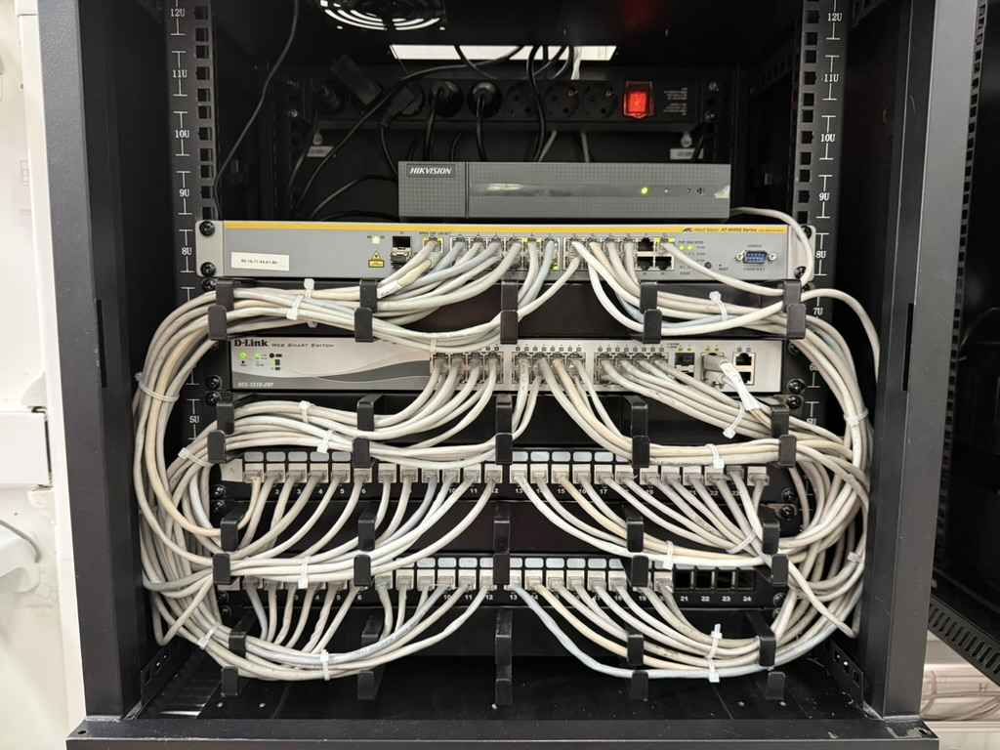
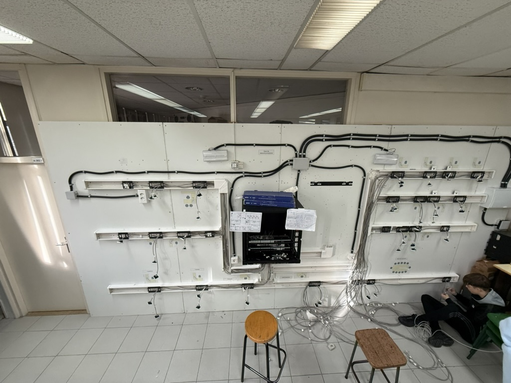

A FastNets, creiem que la tecnologia ha de ser invisible, potent i elegant. Dissenyem xarxes que transformen la manera en què les empreses i les persones viuen, treballen i es comuniquen. Amb una obsessió pel detall i la innovació, portem la connectivitat a un nou nivell.
El nostre compromís
Innovació
Sempre a l'avantguarda, desenvolupem solucions que anticipen les necessitats del mercat.
Senzillesa
La tecnologia ha de ser fàcil d'utilitzar. Simplifiquem la complexitat per als nostres clients.
Excel·lència
Cada instal·lació, cada servei, cada detall: busquem la perfecció en tot el que fem.
Preguntes Freqüents
Realitzem el desplegament de xarxes estructurades, integració de telefonia VoIP, instal·lació i organització de racks de servidors, sistemes CCTV i control d'accessos, així com projectes audiovisuals per a locals d'oci (sistemes DMX, sonorització professional i projectors sincronitzats).
Sí, ens encarreguem de tot el procés estratègic i operatiu, des del disseny inicial i l'estudi de cobertura fins a la instal·lació física del cablejat, la configuració dels equips de xarxa actius i la certificació final de l'origen al destí.
El temps d'execució varia segons la complexitat. Tot i així, com a orientació, la renovació de la infraestructura en una nova seu empresarial (comença des de zero fins a deixar operatius 40-50 punts de xarxa amb Rack) es pot completar aproximadament en un mes de treball constant.
I tant! Tenim gran experiència convertint locals tradicionals en espais moderns i atractius, desenvolupant sistemes de Karaoke avançats, control de llums reactiu a la música i distribució d'altaveus per garantir la millor qualitat acústica.
Absolutament. Tota la nostra infraestructura està ben dimensionada i optimitzada per a evitar fallades o saturacions, però sempre estem a disposició del client per oferir manteniment formatiu, adaptatiu i la resolució de possibles incidències futures amb la màxima agilitat.
Per què FastNets?
Som més que una empresa de telecomunicacions. Som el teu soci tecnològic, compromesos amb la seguretat, la sostenibilitat i la transformació digital. Amb FastNets, la teva empresa està preparada per al demà.
Coneix l'equip